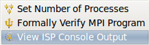
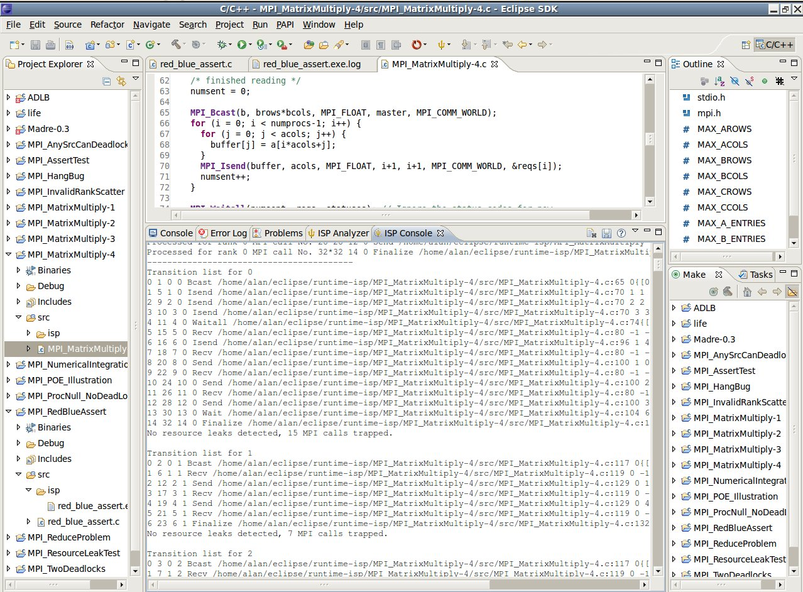

|
Console View
|
Activating the Console View
When one of the following steps is executed, the Console View will automatically be brought to the foreground and given active focus.
Any of the following will accomplish this:
-
Open the source code file in the Eclipse editor window, right click in the editor window and select
View ISP Console Output
from the trident pull-down icon on the Eclipse toolbar.
-
From the Project Explorer window, right click on the C source code file and select
View ISP Console Output
from the ISP context menu.
-
Open the source code file in the Eclipse editor window and right click
View ISP Console Output
from the ISP context menu.

NOTE: The Console View will also be opened up anytime ISP is run and the Analyzer View is opened.
Console Overview
The ISP Console view is simply a dedicated console for viewing the output from ISP itself. This
information will be useful to the advanced user. All this information and more can be graphically
examined from the Analyzer view.
Understanding Output
Please reference the Understanding ISP Output help page.
The image below shows what the Console View should look like.

Note: On the ISP preference page, you can specify whether you want new output to
replace the older or if it should be prepended to the existing terminal output.
ISP Console View Options
This view's toolbar has three buttons:
 Clear Console - Removes all entries from the consoles, leaving it blank.
Clear Console - Removes all entries from the consoles, leaving it blank.
 Save Output to File - Launches a window that lets you save the current contents as a .txt file anywhere you want.
Save Output to File - Launches a window that lets you save the current contents as a .txt file anywhere you want.
 Get ISP Console Help - Opens the Eclipse help topic related to the ISP Console View.
Get ISP Console Help - Opens the Eclipse help topic related to the ISP Console View.
Note: This same functionality can be obtained through the context and pull-down menus for the view.
Back to Top | Back to Table of Contents
School of Computing * 50 S. Central Campus Dr. Rm. 3190 * Salt Lake City, UT
84112 * isp-dev@cs.utah.edu
License